Uniunea Europeana
State membre:
- Austria
- Capitala: Viena
- Membru UE din anul: 1995
- Moneda: Euro
- Belgia
- Capitala: Bruxelles
- Membru UE din anul: 1958
- Moneda: Euro
- Bulgaria
- Capitala: Sofia
- Membru UE din anul: 2007
- Moneda: Lev
- Cehia
- Capitala: Praga
- Membru UE din anul: 2004
- Moneda: Koruna
- Cipru
- Capitala: Nicosia
- Membru UE din anul: 2004
- Moneda: Euro
- Croatia
- Capitala: Zagreb
- Membru UE din anul: 2013
- Moneda: euro
- Danemarca
- Capitala: Copenhaga
- Membru UE din anul: 1973
- Moneda: Krona
- Estonia
- Capitala: Tallinn
- Membru UE din anul: 2004
- Moneda: Euro
- Finlanda
- Capitala: Helsinki
- Membru UE din anul: 1995
- Moneda: Euro
- Franta
- Capitala: Paris
- Membru UE din anul: 1958
- Moneda: Euro
- Germania
- Capitala: Berlin
- Membru UE din anul: 1958
- Moneda: Euro
- Grecia
- Capitala: Atena
- Membru UE din anul: 1981
- Moneda: Euro
- Irlanda
- Capitala: Dublin
- Membru UE din anul: 1973
- Moneda: Euro
- Italia
- Capitala: Roma
- Membru UE din anul: 1958
- Moneda: Euro
- Letonia
- Capitala: Riga
- Membru UE din anul: 2004
- Moneda: Euro
- Lituania
- Capitala: Vilnius
- Membru UE din anul: 2004
- Moneda: Euro
- Luxemburg
- Capitala: Luxembourg
- Membru UE din anul: 1958
- Moneda: Euro
- Malta
- Capitala: St Paul's Bay
- Membru UE din anul: 2004
- Moneda: Euro
- Polonia
- Capitala: Varsovia
- Membru UE din anul: 1995
- Moneda: Euro
- Portugalia
- Capitala: Lisabona
- Membru UE din anul: 1986
- Moneda: Euro
- Romania
- Capitala: Bucuresti
- Membru UE din anul: 2007
- Moneda: Leu
- Slovacia
- Capitala: Bratislava
- Membru UE din anul: 2004
- Moneda: Euro
- Slovenia
- Capitala: Ljubljana
- Membru UE din anul: 2004
- Moneda: Euro
- Spania
- Capitala: Madrid
- Membru UE din anul: 1986
- Moneda: Euro
- Suedia
- Capitala: Stockholm
- Membru UE din anul: 1995
- Moneda: Krona
- Tarile de Jos
- Capitala: Amsterdam
- Membru UE din anul: 1985
- Moneda: Euro
- Ungaria
- Capitala: Budapesta
- Membru UE din anul: 2004
- Moneda: Forint
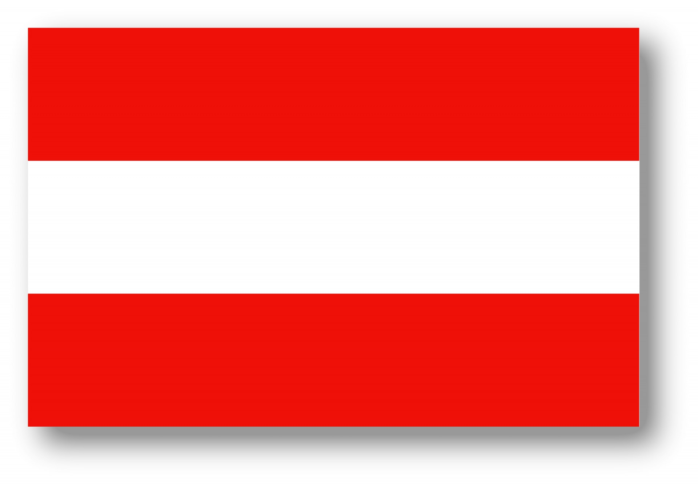

 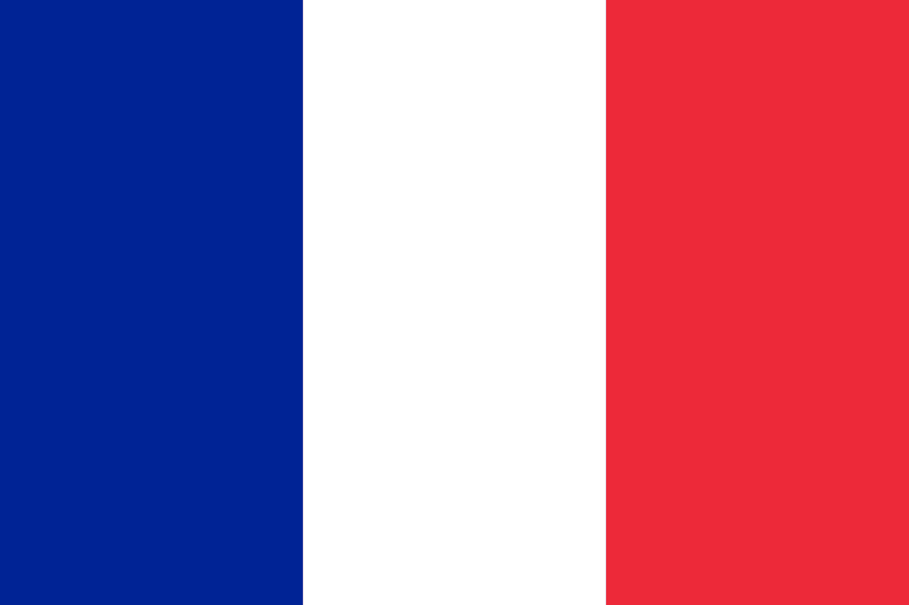
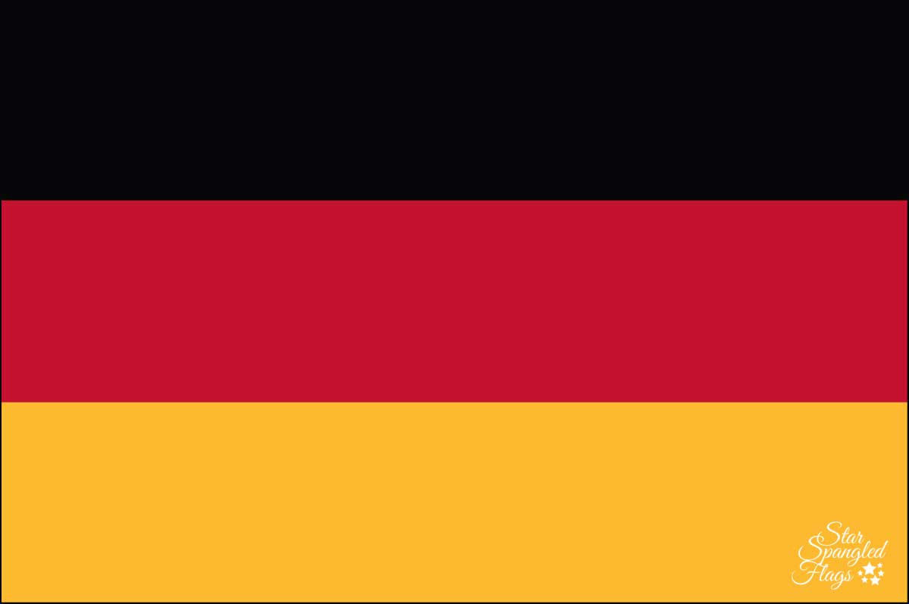
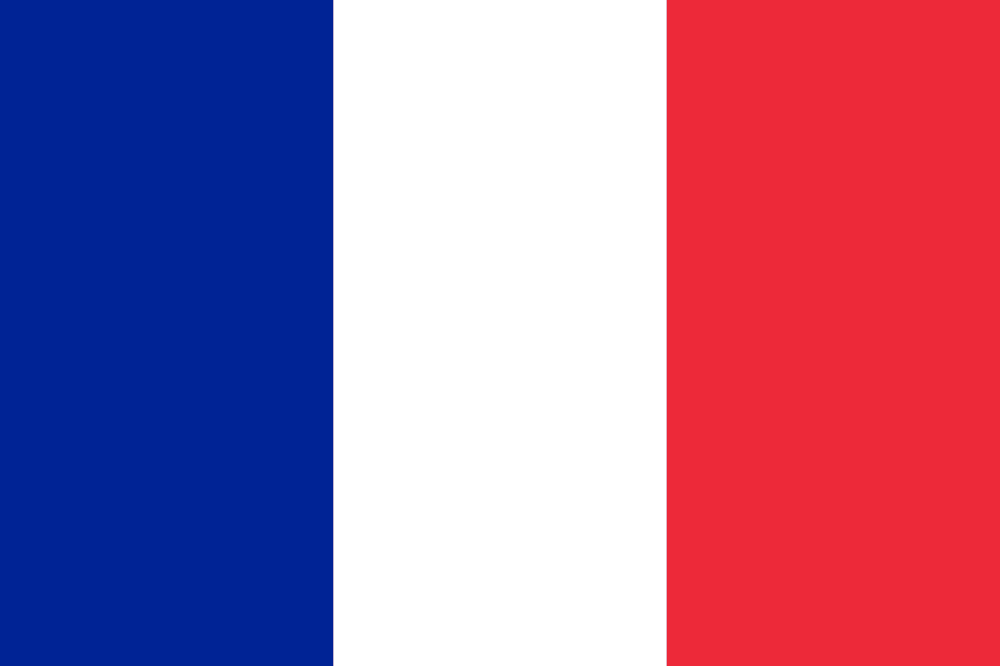
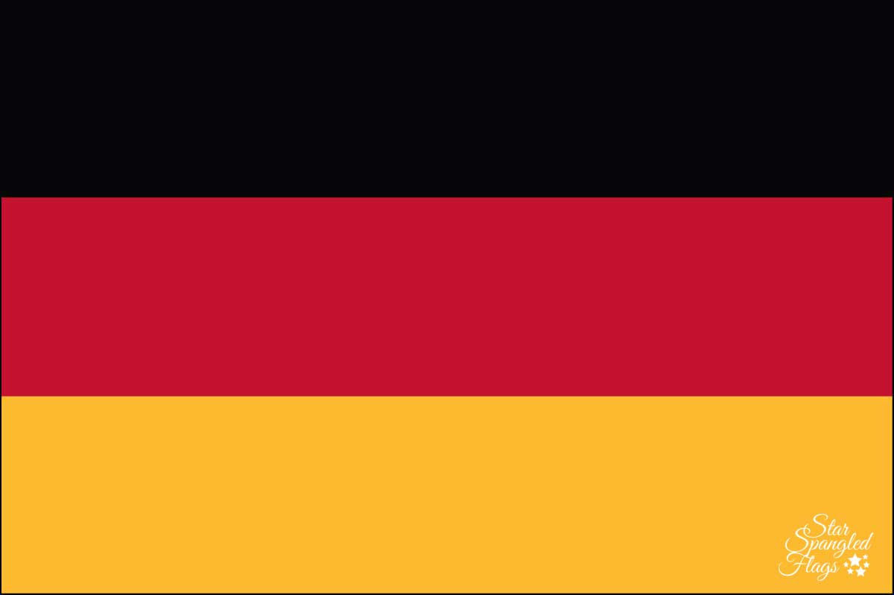

 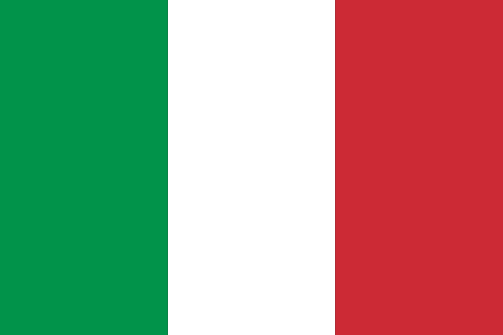
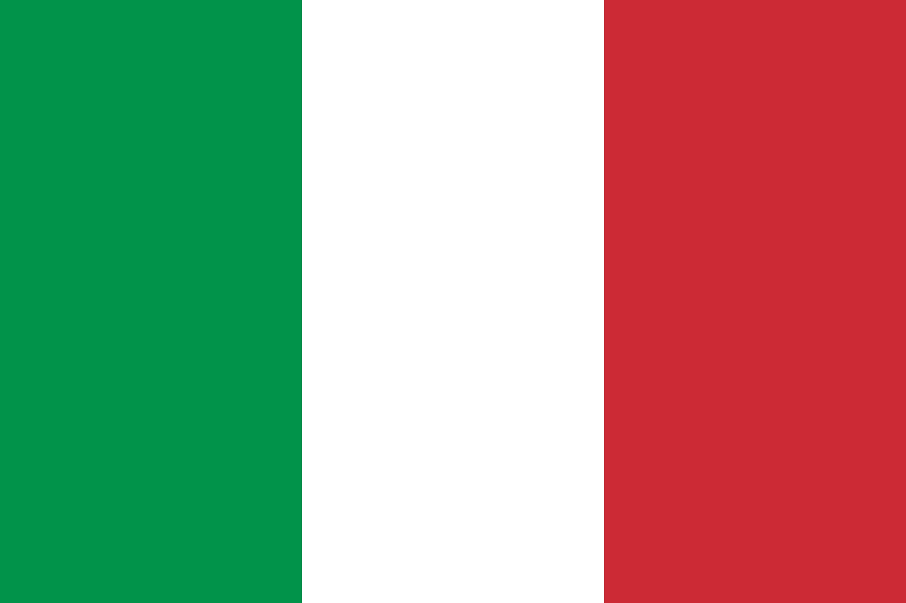


 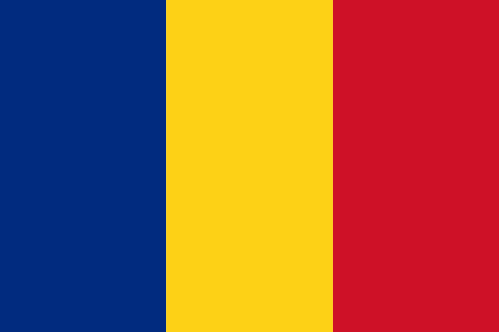
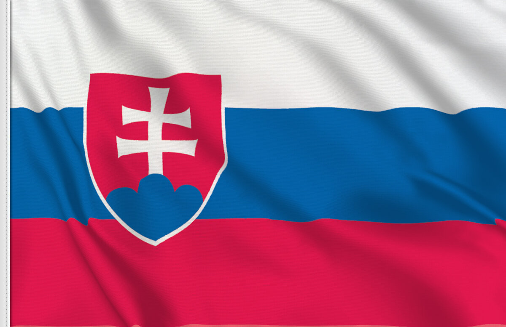
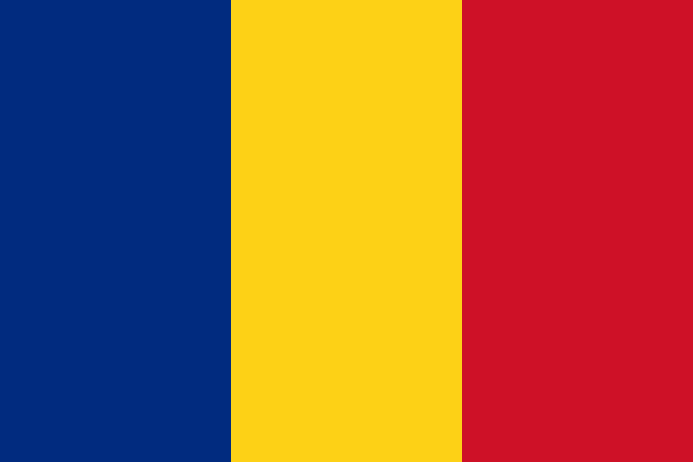
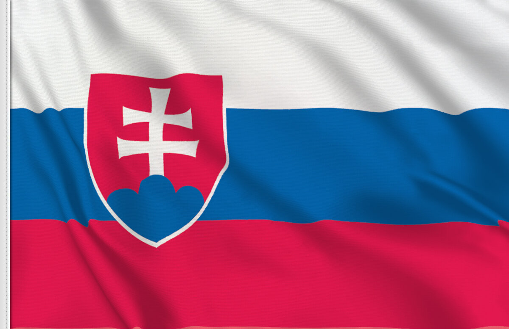